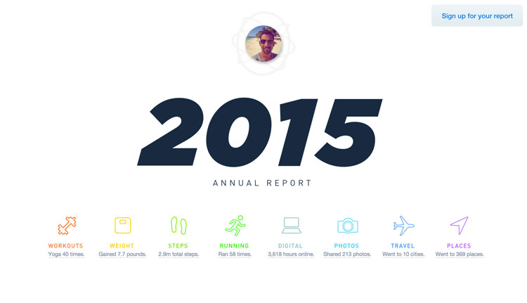

Data Visualization & Goal Tracking
Data visualization can help take many little parts to tell a story. The beautiful thing about it is that it can take a vast amount of information and simplify down to give the big scope picture and to verify trends. Last January, I attended UBER’s data visualization night, where their data visualization team spoke about their design goals in trying to map out a city’s flow taking data from thousands of rides everyday. Nicholas Felton, creator of the Annual Reportswas also there talking about how he tracked his activity throughout the years and presented them in infographics.
Overall, Nicholas Felton says that his reports are not about optimization, which then begs the question, WHY? Why do we need to know how many types of beer we’ve consumed or how many restaurants we’ve been been to in a year if not for change? A quote that stood out in particular during the talk was, “I needed to see myself mirrored in them”. At the core, he needed to have a personal, emotional connection with his work. However, his reports are popular because people are curious and can actually see themselves in his reports too. In 2012, Felton uses an app called Reporter to track of seven specific questions. The app also allows you to customize questions yourself, although the options are limited. The app crows about its features with random sampling, lightweight surveys, and immediate insight. It’s also designed for speed as it takes data from other apps such as Foursquare and provides autocomplete answers.
Anand Sharma does something similar with AprilZero where he takes in information via tools such as FitBit and records his activity daily. In the end, he also has something of an annual report, though it seems to be generated by his program.

There’s one thing that tracks progress that some of see almost every day and that’s the Facebook Timeline. Nicholas Felton and Ryan Case were largely inspired by Daytum which adds entries in a predetermined format. We can record entries with tweets and text messages, which quickens the process. There’s a drop down menu for commonly recorded items for faster recording (for example, coffee drops down to latte, espresso, etc.) and it compares categories using different charts.
Oftentimes, a tile format, such as the one you see here, is a good way to display webcontent.
Going onto goal making however, we oftentimes struggle especially having made many new years resolutions to keep up with them. Many methods involve taking baby steps and moving forward in small increments. The Mint Personal Finance app has you set a goal for how much you want to spend on a particular thing, for example coffee, and has you log your expense whenever you spend. It uses a variety of charts and graphs to show how you are doing in relation to your total goal for a month. The Chain Calendar, Jerry Steinfield’s Productivity Secret, also uses increments -but in the measurement of days. Since it takes 40 days to make or break a habit, he says that if you place a red x on a calendar for every day that you complete your goals, seeing that x chain will persuade us not to break it. Seeing consistency will motivate us to keep going. The original article can be read here.